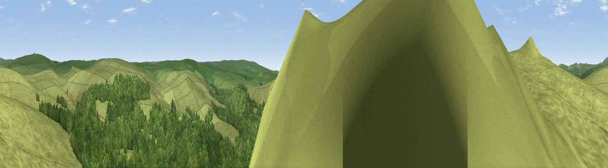

Leather Tor
#5140 in England · top 9% of its area beats it · near DouslandWhere it is
The exact computed spot (SX 56275 69977). Click the marker for map links.
The view, rendered

A 360° render of this exact spot computed from the terrain model, tree cover and land cover — summer colours, afternoon light, calibrated against photographs of famous viewpoints. Real trees, hedges and buildings will differ in detail.
The panorama
Grey silhouette: terrain skyline in each direction (720 bearings, Earth curvature and refraction included). Dashed green: skyline with trees (+15 m) and buildings (+8 m) as obstacles. Blue strip: how far the ground is visible on each bearing.
Where the view opens
Wedge length = distance to the farthest visible ground on that bearing (vegetation-aware). Rings at 10, 25 and 50 km.
What fills the view
62% grassland · 35% woodland · 2% water
Angular shares of the visible panorama (visual magnitude), not map area. Landscape diversity 0.33 (0–1 Shannon).
Key numbers
More beautiful places nearby
The staircase of upgrades: each row has a higher view potential than everything closer. Driving times are estimates from straight-line distance, calibrated against real road routing — check an actual route before setting out.
| Place | Direction | Drive | Score |
|---|---|---|---|
| Sharpitor | NW · 0 km | ~2 min | 77.4 |
| Viewpoint near Dousland | W · 1 km | ~2 min | 81.0 |
| Viewpoint near Lee Moor | S · 7 km | ~15 min | 82.7 |
| Viewpoint near Downderry | SW · 28 km | ~44 min | 83.5 |
| Viewpoint near Hope | SSE · 33 km | ~51 min | 84.4 |
| Viewpoint near East Prawle | SSE · 39 km | ~59 min | 84.6 |
| Pencarrow Head | WSW · 45 km | ~65 min | 86.0 |
| Viewpoint near Lesnewth | WNW · 49 km | ~70 min | 87.7 |
50.51189, -4.02843 · source: osm peak · position refined by local search. Computed location — check access rights before visiting.